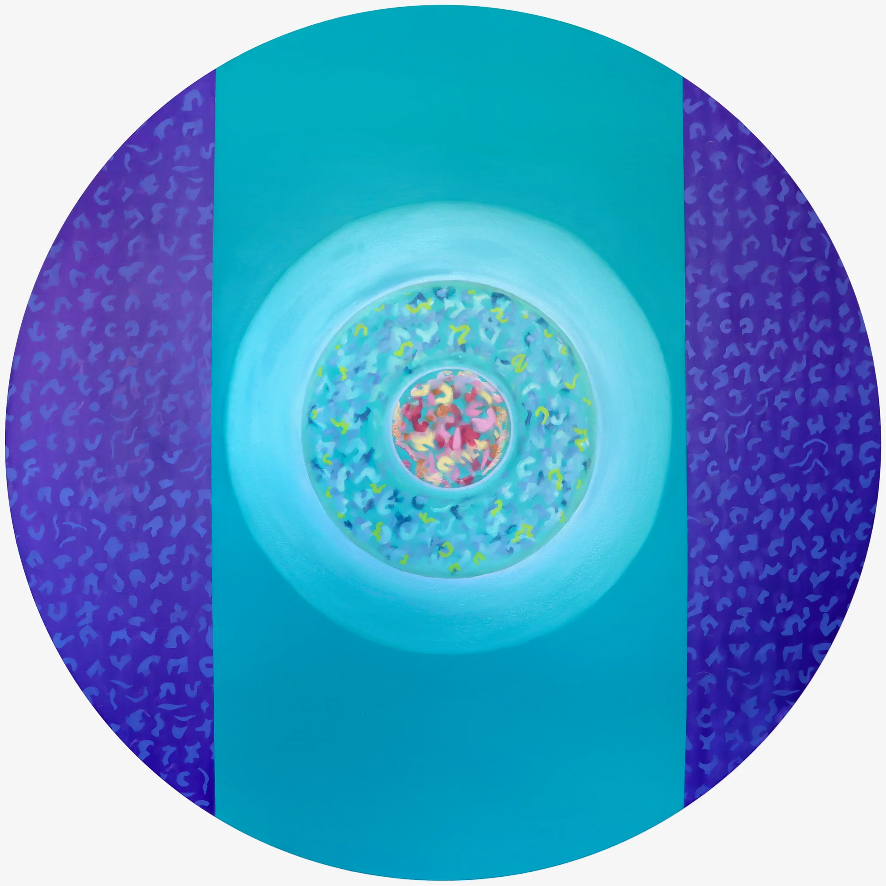

Karen Ebbs Founding Artist
'Stillness Speaks'
€6,500
Buy directly from the artist: your enquiry is passed to Karen Ebbs through PlotArt, and you agree the price, delivery and payment together. Nothing is paid until you have both agreed.
Adds this work to your PlotArt basket, where you see the delivery cost and the total before paying securely by card. Online purchase delivers in the Republic of Ireland only; for delivery elsewhere, please enquire.
- Medium
- Oil on wooden tondo
- Materials
- Oil painting on custom-made, primed, wooden tondo cradle
- Size
- 150 × 150 × 3 cm (59.1 × 59.1 × 1.2 in)
- Year
- 2024
The idea behind this painting is that so much can be achieved when one is silent and when one practices taking time out of the noisy world and listens to what is going on in one's inner world.
Check this size on your wall with the PlotArt art size calculator, or see more original Irish art for sale.
Also in the abstract and contemporary art and large original artworks collections. You can also commission a new work from Karen Ebbs.